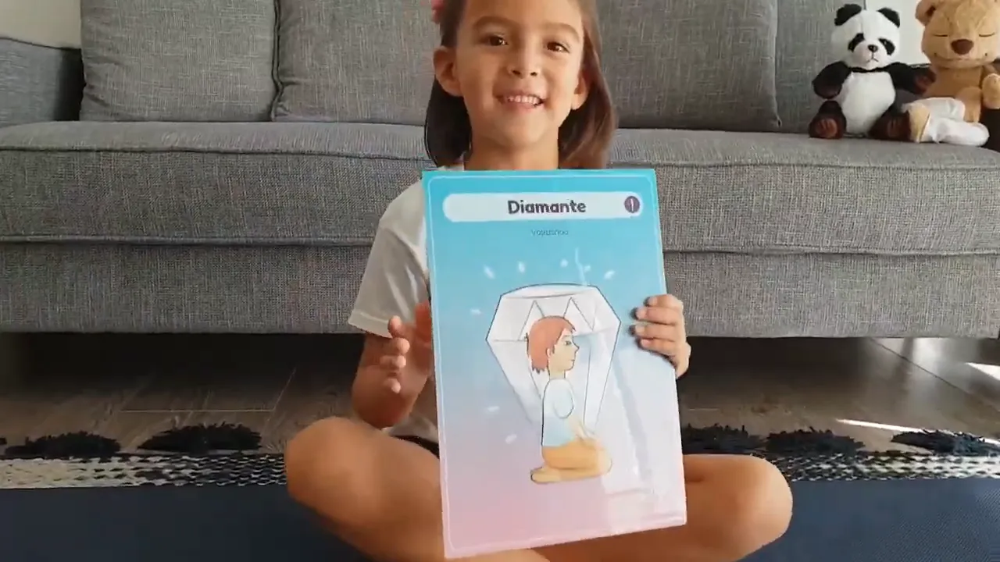

Hola!
Para comenzar esta semana, con Luz queremos compartirles un nuevo video, esta vez con la postura del Diamante o Vajrasana 💎.
Vajrasana es un término en sánscrito que se compone de dos palabras: «vajra» y «asana». Vajra que significa Rayo o Diamante, y asana que significa postura.
Algunos de los beneficios de la práctica regular de esta postura son: * Es buena para la digestión.
- Nos ayuda a estirar los músculos de las piernas, cuyos efectos son muy positivos.
- Entre dichos efectos está el de aliviar y prevenir el dolor de ciática.
- Nos ayuda a entrenar la respiración yóguica o Pranayama.
- A través del reposo y la respiración podemos llegar al estado adecuado para practicar la meditación.
Si les gusta este video les agradecemos nos ayuden a compartir, para que otros niños y niñas puedan disfrutar junto a Luz, de estos hermosos momentos.
Que tengan una linda nueva semana.
Un abrazo,
Carmen 🙏💫💜🦋